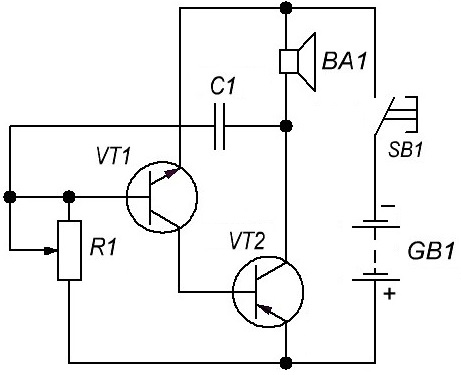
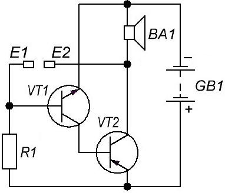
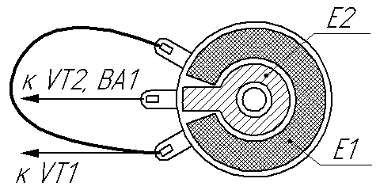

Простой звонок
Звонок (рис. 1) собран на двух транзисторах разной структуры по схеме несимметричного мультивибратора. Частоту генерируемого звука подбирают вращением оси переменного резистора R1 и изменением емкости конденсатора С1.

Таблица 1
| Обозначение | Наименование | Номинал | Количество | Примечание |
|---|---|---|---|---|
| ВА1 | Динамическая головка | 0,25ГД-10 | 1 | 8 Ом, 0,5 Вт |
| C1 | Конденсатор | 0,01 мкФ | 1 | |
| GB1 | Батарейка | 4,5 В | 1 | |
| R1 | Резистор переменный | 100 кОм | 1 | |
| SB1 | Кнопочный выключатель | 1 | без фиксации | |
| VT1 | Транзистор биполярный | КТ315Г | 1 | |
| VT2 | Транзистор биполярный | КТ814А | 1 |
Питание звонка можно сделать от сети или гальванической батареи.
Включение звонка можно сделать от сенсорных контактов (рис. 2). Мультивибратор начинает работать, когда касаются пальцем сенсорных контактов Е1 и Е2. В этот момент между коллектором транзистора VT2 и базой транзистора VT1 оказывается включенным сопротивление участка кожи пальца, и между каскадами появляется положительная обратная связь.

Таблица 1
| Обозначение | Наименование | Номинал | Количество | Примечание |
|---|---|---|---|---|
| ВА1 | Головка динамическая | 0,25ГД-10 | 1 | 8 Ом, 0,5 Вт |
| E1, E2 | Контакты сенсорные | 2 | самодельные | |
| GB1 | Батарейка | 4,5 В | 1 | |
| R1 | Резистор постоянный | 91 кОм | 1 | |
| VT1 | Транзистор биполярный | КТ315Г | 1 | |
| VT2 | Транзистор биполярный | КТ814А | 1 |
Сенсорные контакты представляют собой два металлических кольца из медной или латунной фольги разного диаметра, которые расположены одно внутри другого. В качестве сенсорных контактов можно использовать переменный резистор: удалить крышку и ось с ползунком, а оставшуюся часть использовать как сенсорные контакты (рис. 3).

Источники
radiostorage.net - Схема простого мелодичного звонока для квартиры